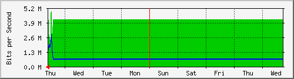
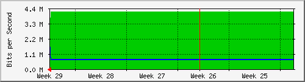

INTERNET TELMEX 50 MG PERISUR
| System: | FW-CDP-E3.default.domain.invalid in 10.1.32.20 |
| Maintainer: | |
| Description: | Adaptive-Security-Appliance-'inside'-interface |
| ifType: | ethernetCsmacd (6) |
| ifName: | inside |
| Max Speed: | 125.0 MBytes/s |
| Ip: | 10.1.101.38 (No DNS name) |
Estadísticas actualizadas el Jueves 21 de Julio de 2022 a las 14:35,
'FW-CDP-E3.default.domain.invalid' ha estado funcionando durante 411 days, 14:23:34.
Gráfico diario (5 minutos : Promedio)
|
Máx |
Promedio |
Actual |
| Entrante: |
11.4 Mb/s (1.1%) |
4079.2 kb/s (0.4%) |
3312.1 kb/s (0.3%) |
| Saliente: |
5135.0 kb/s (0.5%) |
824.5 kb/s (0.1%) |
765.6 kb/s (0.1%) |
Gráfico semanal (30 minutos : Promedio)

|
Máx |
Promedio |
Actual |
| Entrante: |
4926.5 kb/s (0.5%) |
4147.5 kb/s (0.4%) |
3955.2 kb/s (0.4%) |
| Saliente: |
2835.6 kb/s (0.3%) |
693.1 kb/s (0.1%) |
1999.3 kb/s (0.2%) |
Gráfico mensual (2 horas : Promedio)

|
Máx |
Promedio |
Actual |
| Entrante: |
4160.7 kb/s (0.4%) |
4158.4 kb/s (0.4%) |
3685.9 kb/s (0.4%) |
| Saliente: |
2126.6 kb/s (0.2%) |
671.3 kb/s (0.1%) |
2126.6 kb/s (0.2%) |
Gráfico anual (1 día : Promedio)
|
Máx |
Promedio |
Actual |
| Entrante: |
8491.3 kb/s (0.8%) |
3467.9 kb/s (0.3%) |
4160.7 kb/s (0.4%) |
| Saliente: |
1496.6 kb/s (0.1%) |
719.3 kb/s (0.1%) |
666.9 kb/s (0.1%) |
| VERDE ### |
Entrante:coming Traffic in Bits per Second |
| AZUL ### |
Saliente:going Traffic in Bits per Second |